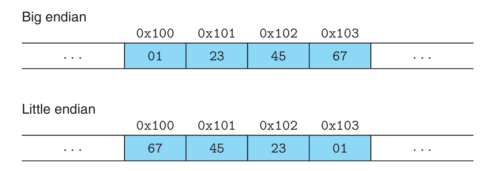

信息存储与表示
信息存储
十六进制表示法

十进制和十六进制表示之间的转换需要使用乘法或者除法来处理.一般情况,将一个十进制数字\(x\)转换为十六进制，可以反复地用\(16\)除\(x\),得到一个商\(q\)和一个余数\(r\),也就是\(x=q\times16+r\).然后，我们用十六进制数字表示的\(r\)作为最低位数字,并且通过对\(q\)反复进行这个过程得到剩下的数字。
例如,考虑十进制\(314156\)的转换:
所以,十进制数\(314156\)的十六进制表示为\(\mathrm{0x4CB2C}\).
同样的,将一个十六进制数字转换为十进制数字，我们可以用相应的\(16\)的幂乘以每个十六进制数字。
例如:将十六进制数\(\mathrm{0x7AF}\)转换为十进制:
字数据的大小
寻址范围
对于字长为\(w\)的计算机,它的寻址范围为\(0\sim 2^w-1\),程序可以访问\(2^w\)字节. 32位字长限制虚拟地址空间为4千兆字节(写作4GB),扩展到 64 位字长使得虚拟地址空间为16EB, 大约是\(1.84\times10^{19}\)字节。
下图为 C语言 中的数据类型的大小,其中int和long的大小与编译器有关,通常在32位系统中为4字节,在64位系统中为8字节.

寻址和字节顺序
一个\(w\)位整数的位表示为:\([x_{w-1},x_{w-2},\cdots,x_1,x_0]\),其中\(x_{w-1}\)为最高有效位,\(x_0\)为最低有效位.
最低有效位在前的表示方式为小端法,最高有效位在前的表示方法为大端法.
例如,对于数0x01234567,大端法和小端法的表示如下图

C语言中的位级运算
整数表示
无符号数的编码
可以将一个\(w\)位的整数表示为向量\(\vec{x}=[x_{w-1},x_{w-2},\cdots,x_1,x_0]\),对于\(\vec{x}\)有
\(B2U_2\)是一个双射
一些例子
\(UMax_w=2^{w-1}\)
补码编码
可以将一个\(w\)位的整数表示为向量\(\vec{x}=[x_{w-1},x_{w-2},\cdots,x_1,x_0]\),对于\(\vec{x}\)有
\(B2T_2\)是一个双射
一些例子
有符号数和无符号数的转换
整数运算
无符号加法
对于满足\(0\le x,y\le 2^w\)的\(x\)和\(y\)有
检测无符号加法的溢出
对于满足\(0\le x,y\le 2^w\)的\(x\)和\(y\),如果\(x+y< x\)或者\(x+y< y\),则溢出.
补码加法
对于满足\(TMin_w \le x,y \le TMax_w\)的\(x\)和\(y\)有
检测补码加法的溢出
对于满足\(TMin_w \le x,y \le TMax_w\)的\(x\)和\(y\),如果\(x< 0,y< 0\)且\(x+y>0\)则负溢出;如果\(x>0,y>0\)且\(x+y< 0\),则正溢出.
补码的非
对于满足\(TMin_w \le x\le TMax_w\)的\(x\)有
补码的非的位级表示
方法1: 将\(x\)的每一位取反,然后加1. 即-x与~x+1的值是相同的.
方法2: 假设\(x\)的位级表示为
\[ [x_{w-1},x_{w-2},\cdots,x_{k+1},1,0,\cdots,0] \]其中,\(k\)为最右边的一个\(1\),只要\(x\ne0\),就一定存在这样的\(k\).
那么\(-^t_w x\)的位级表示为
\[ [\verb|~|x_{w-1},\verb|~|x_{w-2},\cdots,\verb|~|x_{k+1},1,0,\cdots,0] \]
补码减法溢出判断
- 如果\(x>0, y<0\)且\(x-y<0\),则正溢出
- 如果\(x<0, y>0\)且\(x-y>0\),则负溢出
无符号乘法
对于满足\(0\le x,y\le UMax_w\)的\(x\)和\(y\)有 $$ x *^u_w y=(x\cdot y)\bmod 2^w $$
补码乘法
对于满足\(TMin_w \le x,y \le TMax_w\)的\(x\)和\(y\)有 $$ x*^t_w y=U2T_w((x\cdot y)\bmod 2^w) $$
乘以常数
乘以\(2\)的幂
设无符号整数\(x\)的位级表示为\([x_{w-1},x_{w-2},\cdots,x_0]\),那么,对于任意的\(k\ge0\), 向\(x\)的右侧加\(k\)个\(0\)得到\([x_{w-1},x_{w-2},\cdots,x_0,\cdots,0]\)这是\(x2^k\)的位级表示
与\(2\)的幂相乘的无符号乘法
对于无符号整数\(x\)和\(k\),其中\(0\le k< w\),C表达式x<<k会得到\(x*^u_w2^k\)
与\(2\)的幂相乘的补码乘法
对于补码\(x\)和无符号整数\(k\),其中\(0\le k< w\),C表达式x<<k会得到\(x*^u_w2^k\)
对于一组\(0\)和\(1\)交替的序列 $$ [(0\cdots 0)(1\cdots 1)\cdots(0\cdots 0)(1\cdots 1)] $$ 对于一组从位位置\(n\)到位位置\(m\)的连续的\(l\)(\(n\le m\)).可以用下面两种不同形式中的一种来计算这些位对乘积的影响
除以2的幂
浮点数
二进制小数
与十进制小数类似,考虑一个形如
的二进制小数,其中每个\(b_i\)都是\(0\)或\(1\).那么这个二进制小数的值为
例如,二进制数\(101.11_2\)表示数字\(1\times 2^2+0\times 2^1+1\times 2^0+1\times 2^{-1}+1\times 2^{-2}=5\dfrac{3}{4}\)
IEEE浮点数
IEEE浮点标准用 \(V=(-1)^s\times M\times 2^E\) 来表示浮点数:
- 符号 \(s\) 是符号位,决定了数的正负
- 尾数 \(M\) 一个二进制数字,范围是 \(1\sim 2-\epsilon\),或者 \(0\sim 1-\epsilon\) .
- 指数 \(E\) 是对浮点数加权
将浮点数划分为三个部分,分别进行编码
- 一个单独的符号位 \(s\)直接编码符号\(s\)。
- \(k\) 位的阶码字段 \(exp=e_{k-1} \cdots e_1 e_0\)。编码阶码 \(E\)。
- \(n\) 位小数字段 \(frac=f_{n-1} \cdots f_1 f_0\)编码尾数 \(M\), 但是编码出来的值也依赖于阶码字段的值是否等于0

给定位表示,根据exp的值，被编码的值可以分成三种不同的情况(最后一种情况有两个变种)

补充1:掩码
提取特定的位
要提取一个数中特定的位应使用&,将要提取的位对应的mask设置为\(1\),其余的设置为\(0\).
例如
int x = 0xABCD; // 二进制：1010101111001101
int mask = 0xF; // 0xF = 0000000000001111
int result = x & mask // 结果是0xD = 0000000000001101
以上代码会提取\(x\)的低\(4\)位
设置某些位为1
要设置特定的位为\(1\)应使用|,将要设置为\(1\)的位对应的mask设位\(1\),其余位为\(0\)
例如
int x = 0xA8; // 二进制:0000000010101000
int mask = 0x3 // 0x3 = 0000000000000011
int result = x | mask; // 结果是 0000000010101011
以上代码会将\(x\)的低\(2\)位设置为\(1\).
清除某些位(设置为\(0\))
要清除特定的位为应使用&,将要清除的位对应的mask设位\(0\),其余位为\(1\)
构造mask时,可以使用~和<<
如果要将第\(m\)位和第\(n\)位设置为0,则mask应为(1<<m)|(1<<n)
例如
int x = 0xA8; // 二进制:0000000010101000
int mask = ~(0xF) // ~(0xF) = 111111110000
int result = x & mask; // 结果是 0000000010100000
取反某些位
要清除特定的位为应使用^(异或),将要取反的位对应的mask设位\(1\),其余位为\(0\)
例如
int x = 0xA8; // 二进制:0000000010101000
int mask = 0x7; // 0x7 = 0000000000000111
int result = x ^ mask; //结果是 000000010101111
以上代码会将\(x\)的低\(3\)位取反.
判断某些位是否为\(1\)
要判断一个数中特定的位应使用&,将要判断的位对应的mask设置为\(1\),其余的设置为\(0\).
如果要判断的为全部为\(1\),那么结果将等于mask,即可以用x & mask == mask进行判断
构造mask时,可以使用~和<<
如果要将第\(m\)位和第\(n\)位设置为0,则mask应为(1<<m)|(1<<n)
例如:
int data = 0x8 // 00001000
int mask = (1 << 0) | (1 << 3); // 00001001
if (data & mask)
{
// 第0位或第3位至少有一位是1
}
补充2:逻辑非(!)与逻辑双非(!!)
逻辑非与逻辑双非可以格式化结果.
如果\(p\)为\(0\),则!p为1,!!p为0;
如果\(p\)非\(0\),则!p为0,!!p为1.